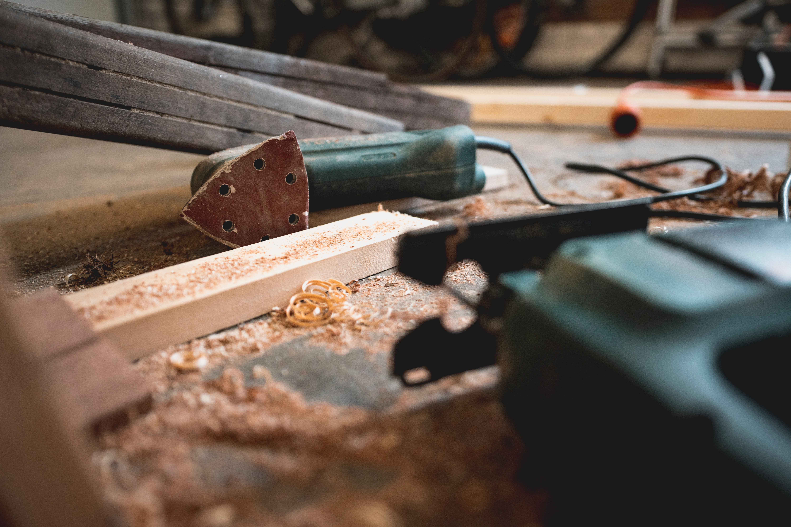
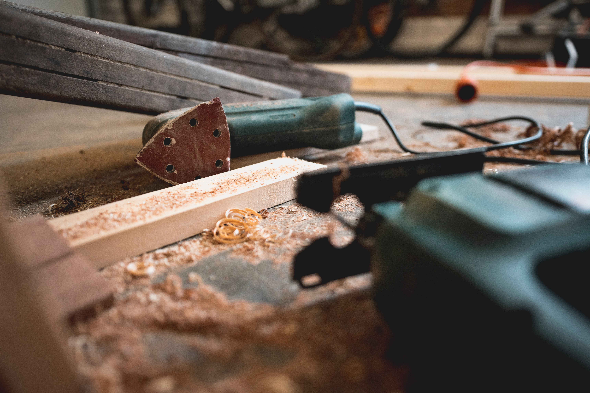

What Tools For What
There are many tools out there to help with certain tasks. One example are the many electronic saws that are now more commonly attainable. The purpose of the saw is to cut any big piece of wood much more faster than what a regular old fashioned saw would. Not only does it cut wood in half but it cuts the time to do so in half as well.
The small circular saw is just scratching the surface of the amount of tools that many woodworkers have at their disposale. One of the hand operated tools are the wood carvers used to shape how the project looks. Shaping the project isn't the only thing this tool is used for however. This tool can also be used to make the designs on the wood to make it look better or more presentable.
 
